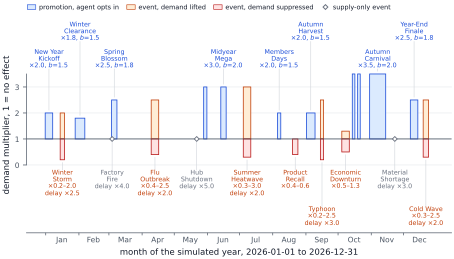
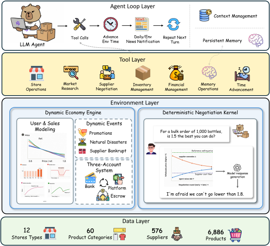
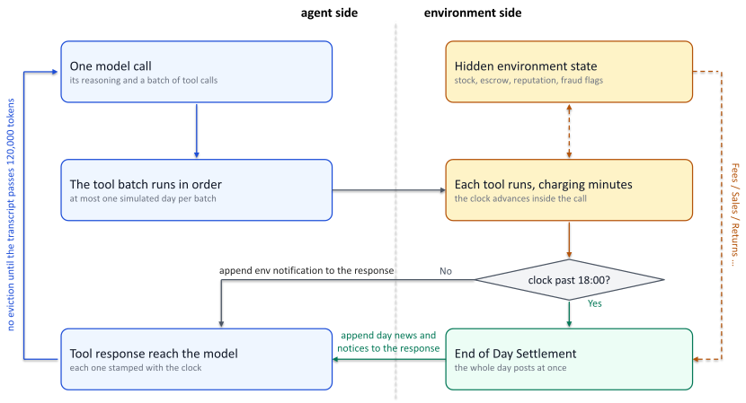
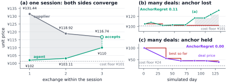
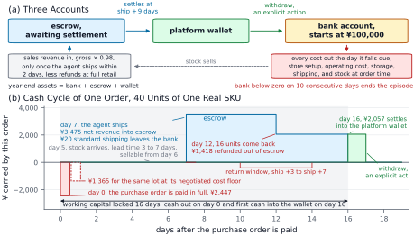

E-Commerce Bench
A 365-Day Long-Horizon E-Commerce Simulation for LLM Agent Evaluation
E-Commerce Bench is a comprehensive benchmark that evaluates LLM agents as autonomous online store owners. Each agent independently manages store setup, supplier negotiation, inventory procurement, product pricing, order fulfillment, and returns handling — with the single objective of maximizing year-end total assets (bank balance + platform wallet + pending settlement).
The environment holds 6,886 products from real e-commerce data across 60 categories, served by 576 suppliers of which 152 are fraudulent across 5 scam types, and a fixed year-long calendar of 8 promotions and 10 market events — natural disasters and supply-chain shocks — that continually reshapes demand. Much of it stays hidden, so the agent must learn which store types pay through action alone, across up to 4,000 turns per episode.
Both sides of the market are deterministic. Customers follow a fixed demand model, and a Deterministic Negotiation Kernel fixes every price, concession and accept/reject decision while an LLM only renders those decisions as dialogue. A sampled reply can never move a price, so a difference in outcome belongs to the agent rather than to chance.
We evaluate 18 models — 8 proprietary and 10 open-weight — across 7 vendor families: Anthropic (Fable5, Opus 4.6–4.8), OpenAI (GPT 5.5, 5.6 Sol), Google (Gemini 3.1 Pro, 3.5 Flash), Qwen (3.5-Plus–3.8-Max-Preview), GLM (5.1, 5.2), Kimi (K2.6, K3) and DeepSeek (V4-Pro-Preview). Each model runs 5 independent episodes in one fixed world, 90 episodes in all, and every mean is reported with its standard deviation.
Loading interactive charts…
Overall Performance: Balance Over Time
The primary metric — how well each agent grows its total assets over 365 simulated days.

Capability Profile: No Model Dominates
The primary score and the six evaluation dimensions, read together instead of collapsed into one number.
How It Works
Six design decisions that make E-Commerce Bench a demanding, reproducible testbed for autonomous agents.

Agent as Owner
The agent is handed a merchant account, ¥100,000 and the 2026 calendar. It opens up to 4 stores of the 12 types on offer, researches the market, sources by negotiating, prices goods, fulfils orders and handles returns. No human guidance and no pre-scripted strategy; looking something up costs the same simulated minutes as acting, so watching everything is not an option.
Deferred Cash
Revenue flows through an escrow settlement pipeline: sale → shipment → pending settlement → platform wallet → bank. Every cost hits the bank the day it is incurred, and the agent must actively withdraw to stay solvent — so a profitable plan can still run out of cash. Ten of the 90 episodes ended in bankruptcy.
576 Suppliers (152 Fraudulent)
Each supplier serves one category. 152 bad suppliers employ 5 fraud types: VIP fee extortion, quantity bait-and-switch, quality downgrade, fake urgency, and future discount traps. Detecting fraud means spending less on bad suppliers.
Information Asymmetry
Agents see product listings but never a supplier's private cost floor or fraud status. Every price, concession and accept/reject decision comes from a Deterministic Negotiation Kernel, which extends the negotiation-partner design of TERMS-Bench to repeated, cross-supplier bargaining. A separate LLM only renders those fixed decisions as dialogue, so bargaining stays in natural language while sampling can never move a price.
Seasonal Economy
Demand combines price elasticity, weekday, seasonality, 8 scheduled promotions (up to 3.5×), 10 market events and store reputation. Its only randomness is seeded from the episode, so runs reproduce exactly. Agents that fail to stock ahead of a peak miss the revenue window, and money leaves the bank the day an order is signed but returns weeks later.
Seven Readings, Not One
The primary score is end-of-year total assets (bank + platform wallet + pending settlement). Six dimensions are read beside it: negotiation quality, fraud avoidance, cash flow and solvency, operational efficiency, operations execution and learning over the horizon. No single model leads all seven.
A Day in the Life
Follow an agent through a typical business day — from market research to cash withdrawal.

Negotiation in Action
Side-by-side comparison of how different models negotiate with suppliers — same task, different strategies.
negotiate JSON protocol.
Negotiation Ability
Assessing how effectively each agent bargains with suppliers to secure lower purchase prices.
Negotiation Efficiency Radar (by Supplier Family)
Average SE+ against each of the 5 honest supplier personalities (higher = better at bargaining); the adversarial family is excluded. Four models are shown by default — the top earner, the best and weakest negotiators, and Qwen3.8-Max-Preview. Click any legend entry to add or remove a model.

Price Learning Curves
Each chart tracks the deal price the agent negotiates for the same SKU with the same supplier across successive rounds. The ● solid line shows Qwen3.8-Max-Preview discovering lower prices over time, while the ◇ dashed gray line shows a weaker model that never works the price down. ★ Orange step-line = best price so far. Green dashed = reference price, orange dashed = cost floor.
Fraud Detection
Evaluating each agent's ability to identify and avoid fraudulent suppliers.
Case Study: Spotting a Fake-Urgency Scam
A real encounter between an agent and a fraudulent supplier, with the tell-tale phrases marked in place.
Bad Supplier Spend Share Lower is better
Spend on 152 bad suppliers / total procurement spend. Design principle: detecting fraud = spending less on bad suppliers.
Tool Usage
Analyzing how agents utilize the 18 available tools to operate their businesses.
Tool Usage
Click a tool to view: left = per-model average call count (Qwen3.8-Max-Preview highlighted), right = real call example (from Qwen3.8-Max-Preview trajectory).
Negotiation Leaderboard
Comprehensive ranking across all negotiation metrics.
Negotiation Metrics Leaderboard
Click column headers to sort. All values are 5-run averages.
Qwen3.8-Max-Preview row highlighted.
Returns & Inventory Management
How well agents manage product quality, shipping speed, and warehouse inventory levels.
Return Rate & Refund Loss
Actual return rate (bars) and refund losses (¥, dots).
Financial Discipline
Measuring financial stability, risk management, and operational consistency.

Max Drawdown Lower is better
Largest peak-to-trough fall in total assets, as a share of the episode’s own peak. Paper Table 2.
Bankrupt Runs (out of 5)
Runs where 10 consecutive days of negative balance triggered bankruptcy. 0 = financially stable across all runs.
Learning over the Horizon
The one thing a year-long task exists to expose — and the dimension the field is weakest at.
AnchorRatio by Model Lower is better · 1.0 = no better than chance
Bars are coloured by significance against each model’s own permutation null (|z| > 1.96, two-sided 5%): green beat its own shuffle, red lost to it, grey is indistinguishable.